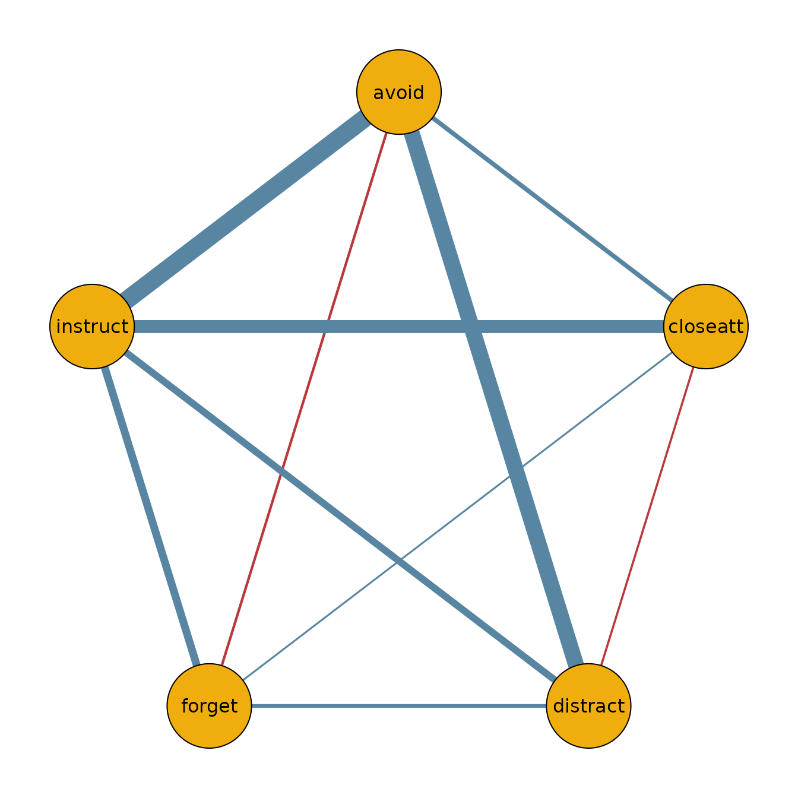

Introduction
The function bgmCompare() extends bgm() to
independent-sample designs. It estimates whether edge weights and
category thresholds differ across groups in an ordinal Markov random
field (MRF).
Posterior inclusion probabilities indicate how plausible it is that a group difference exists in a given parameter. These can be converted to Bayes factors for hypothesis testing.
Fitting a model
fit = bgmCompare(x = data_french, y = data_english, seed = 1234)Note: During fitting, progress bars are shown in interactive sessions. In this vignette, they are suppressed for clarity. Sampling can take a while; the progress bars usually help track progress.
Posterior summaries
The summary shows both baseline effects and group differences:
summary(fit)
#> Posterior summaries from Bayesian grouped MRF estimation (bgmCompare):
#>
#> Category thresholds:
#> parameter mean mcse sd n_eff Rhat
#> 1 loose_ends (1) -0.938 0.002 0.096 3415.827 1.001
#> 2 loose_ends (2) -2.518 0.003 0.139 2069.362 1.004
#> 3 loose_ends (3) -3.796 0.005 0.183 1543.211 1.005
#> 4 loose_ends (4) -5.082 0.007 0.243 1236.538 1.006
#> 5 loose_ends (5) -7.609 0.010 0.335 1164.760 1.007
#> 6 loose_ends (6) -10.106 0.014 0.452 1092.310 1.006
#> ... (use `summary(fit)$main` to see full output)
#>
#> Pairwise interactions:
#> parameter mean mcse sd n_eff Rhat
#> 1 loose_ends-entertain 0.170 0 0.013 2245.500 1.002
#> 2 loose_ends-repetitive 0.058 0 0.012 2059.968 1.007
#> 3 loose_ends-stimulation 0.126 0 0.012 2648.651 1.002
#> 4 loose_ends-motivated 0.141 0 0.013 2490.105 1.002
#> 5 entertain-repetitive 0.067 0 0.012 2712.597 1.000
#> 6 entertain-stimulation 0.109 0 0.012 2591.243 1.001
#> ... (use `summary(fit)$pairwise` to see full output)
#>
#> Inclusion probabilities:
#> parameter mean sd mcse n0->0 n0->1 n1->0
#> loose_ends (main) 0.009 0.094 0.003 3947 16 16
#> loose_ends-entertain (pairwise) 0.020 0.139 0.002 3845 75 75
#> loose_ends-repetitive (pairwise) 0.507 0.500 0.018 1640 331 330
#> loose_ends-stimulation (pairwise) 0.042 0.200 0.003 3680 152 152
#> loose_ends-motivated (pairwise) 0.018 0.132 0.002 3860 68 68
#> entertain (main) 0.001 0.039 0.001 3988 5 5
#> n1->1 n_eff Rhat
#> 20 1156.240 1.027
#> 4 3755.694 1.001
#> 1698 792.304 1.002
#> 15 3617.928 1.012
#> 3 3805.320 1.004
#> 1 2864.511 1.081
#> ... (use `summary(fit)$indicator` to see full output)
#> Note: NA values are suppressed in the print table. They occur when an indicator
#> was constant (all 0 or all 1) across all iterations, so sd/mcse/n_eff/Rhat
#> are undefined; `summary(fit)$indicator` still contains the NA values.
#>
#> Group differences (main effects):
#> parameter mean sd mcse n_eff Rhat
#> loose_ends (diff1; 1) 0.000 0.002 0.000 47.557 1.000
#> loose_ends (diff1; 2) 0.004 0.044 0.001 1082.785 1.001
#> loose_ends (diff1; 3) 0.004 0.043 0.001 902.638 1.001
#> loose_ends (diff1; 4) 0.004 0.042 0.001 923.443 1.001
#> loose_ends (diff1; 5) 0.001 0.010 0.001 113.681 1.000
#> loose_ends (diff1; 6) -0.003 0.031 0.001 630.010 1.000
#> ... (use `summary(fit)$main_diff` to see full output)
#> Note: NA values are suppressed in the print table. They occur here when an
#> indicator was zero across all iterations, so mcse/n_eff/Rhat are undefined;
#> `summary(fit)$main_diff` still contains the NA values.
#>
#> Group differences (pairwise effects):
#> parameter mean sd mcse n_eff Rhat
#> loose_ends-entertain (diff1) 0.000 0.000 0.000 92.057 1.001
#> loose_ends-repetitive (diff1) 0.021 0.022 0.001 837.278 1.001
#> loose_ends-stimulation (diff1) 0.001 0.005 0.000 2789.970 1.001
#> loose_ends-motivated (diff1) 0.000 0.002 0.000 1517.163 1.000
#> entertain-repetitive (diff1) 0.004 0.011 0.000 1174.633 1.001
#> entertain-stimulation (diff1) 0.002 0.007 0.000 2567.839 1.001
#> ... (use `summary(fit)$pairwise_diff` to see full output)
#> Note: NA values are suppressed in the print table. They occur here when an
#> indicator was zero across all iterations, so mcse/n_eff/Rhat are undefined;
#> `summary(fit)$pairwise_diff` still contains the NA values.
#>
#> Use `summary(fit)$<component>` to access full results.
#> See the `easybgm` package for other summary and plotting tools.You can extract posterior means and inclusion probabilities:
coef(fit)
#> $main_effects_raw
#> baseline diff1
#> loose_ends(c1) -0.9376669 -8.550637e-05
#> loose_ends(c2) -2.5179548 4.207447e-03
#> loose_ends(c3) -3.7960694 4.109076e-03
#> loose_ends(c4) -5.0822845 4.002782e-03
#> loose_ends(c5) -7.6089748 9.141143e-04
#> loose_ends(c6) -10.1063777 -2.905428e-03
#> entertain(c1) -0.8692630 -4.662515e-04
#> entertain(c2) -2.2458877 -1.496695e-04
#> entertain(c3) -3.8177841 2.483365e-04
#> entertain(c4) -5.1697251 -3.493918e-04
#> entertain(c5) -7.0455504 -2.961615e-05
#> entertain(c6) -9.5780234 8.034366e-04
#> repetitive(c1) -0.1379151 -8.806321e-03
#> repetitive(c2) -0.6611929 -1.585117e-02
#> repetitive(c3) -1.0866300 -5.037304e-03
#> repetitive(c4) -1.8627494 6.470289e-03
#> repetitive(c5) -3.2512960 2.020118e-02
#> repetitive(c6) -5.0299108 2.038924e-02
#> stimulation(c1) -0.5457673 -3.167586e-03
#> stimulation(c2) -1.7894587 -1.004249e-03
#> stimulation(c3) -2.5304682 -1.332632e-03
#> stimulation(c4) -3.6190432 -2.226982e-03
#> stimulation(c5) -5.0975023 -1.200563e-03
#> stimulation(c6) -7.0661001 -3.494762e-03
#> motivated(c1) -0.5585283 -2.017340e-03
#> motivated(c2) -1.8120817 -1.070582e-03
#> motivated(c3) -3.2996542 1.534816e-03
#> motivated(c4) -4.7945890 2.748786e-03
#> motivated(c5) -6.7933940 -6.137974e-04
#> motivated(c6) -9.1663037 1.980850e-03
#>
#> $pairwise_effects_raw
#> baseline diff1
#> loose_ends-entertain 0.16991838 2.642296e-05
#> loose_ends-repetitive 0.05811138 2.137907e-02
#> loose_ends-stimulation 0.12622492 9.635558e-04
#> loose_ends-motivated 0.14097684 -2.398129e-04
#> entertain-repetitive 0.06659031 4.431347e-03
#> entertain-stimulation 0.10937128 1.801550e-03
#> entertain-motivated 0.08666756 3.824078e-03
#> repetitive-stimulation 0.05631314 6.388122e-04
#> repetitive-motivated 0.13750770 1.397853e-02
#> stimulation-motivated 0.10798919 1.154900e-04
#>
#> $main_effects_groups
#> group1 group2
#> loose_ends(c1) -0.9376242 -0.9377097
#> loose_ends(c2) -2.5200585 -2.5158511
#> loose_ends(c3) -3.7981240 -3.7940149
#> loose_ends(c4) -5.0842859 -5.0802831
#> loose_ends(c5) -7.6094318 -7.6085177
#> loose_ends(c6) -10.1049250 -10.1078305
#> entertain(c1) -0.8690299 -0.8694961
#> entertain(c2) -2.2458129 -2.2459625
#> entertain(c3) -3.8179083 -3.8176599
#> entertain(c4) -5.1695504 -5.1698998
#> entertain(c5) -7.0455356 -7.0455652
#> entertain(c6) -9.5784251 -9.5776217
#> repetitive(c1) -0.1335119 -0.1423182
#> repetitive(c2) -0.6532674 -0.6691185
#> repetitive(c3) -1.0841114 -1.0891487
#> repetitive(c4) -1.8659846 -1.8595143
#> repetitive(c5) -3.2613966 -3.2411954
#> repetitive(c6) -5.0401054 -5.0197162
#> stimulation(c1) -0.5441836 -0.5473511
#> stimulation(c2) -1.7889565 -1.7899608
#> stimulation(c3) -2.5298019 -2.5311345
#> stimulation(c4) -3.6179297 -3.6201567
#> stimulation(c5) -5.0969021 -5.0981026
#> stimulation(c6) -7.0643527 -7.0678475
#> motivated(c1) -0.5575196 -0.5595369
#> motivated(c2) -1.8115464 -1.8126170
#> motivated(c3) -3.3004216 -3.2988868
#> motivated(c4) -4.7959634 -4.7932146
#> motivated(c5) -6.7930871 -6.7937009
#> motivated(c6) -9.1672942 -9.1653133
#>
#> $pairwise_effects_groups
#> group1 group2
#> loose_ends-entertain 0.16990517 0.16993159
#> loose_ends-repetitive 0.04742184 0.06880091
#> loose_ends-stimulation 0.12574314 0.12670670
#> loose_ends-motivated 0.14109674 0.14085693
#> entertain-repetitive 0.06437464 0.06880598
#> entertain-stimulation 0.10847051 0.11027206
#> entertain-motivated 0.08475552 0.08857960
#> repetitive-stimulation 0.05599374 0.05663255
#> repetitive-motivated 0.13051843 0.14449696
#> stimulation-motivated 0.10793144 0.10804693
#>
#> $indicators
#> loose_ends entertain repetitive stimulation motivated
#> loose_ends 0.00900 0.01975 0.50725 0.04175 0.01775
#> entertain 0.01975 0.00150 0.13725 0.06650 0.11425
#> repetitive 0.50725 0.13725 0.03675 0.03175 0.36100
#> stimulation 0.04175 0.06650 0.03175 0.00575 0.01525
#> motivated 0.01775 0.11425 0.36100 0.01525 0.00700Visualizing group networks
We can use the output to plot the network for the French sample:
library(qgraph)
french_network = matrix(0, 5, 5)
french_network[lower.tri(french_network)] = coef(fit)$pairwise_effects_groups[, 1]
french_network = french_network + t(french_network)
colnames(french_network) = colnames(data_french)
rownames(french_network) = colnames(data_french)
qgraph(french_network,
theme = "TeamFortress",
maximum = 1,
fade = FALSE,
color = c("#f0ae0e"), vsize = 10, repulsion = .9,
label.cex = 1, label.scale = "FALSE",
labels = colnames(data_french)
)